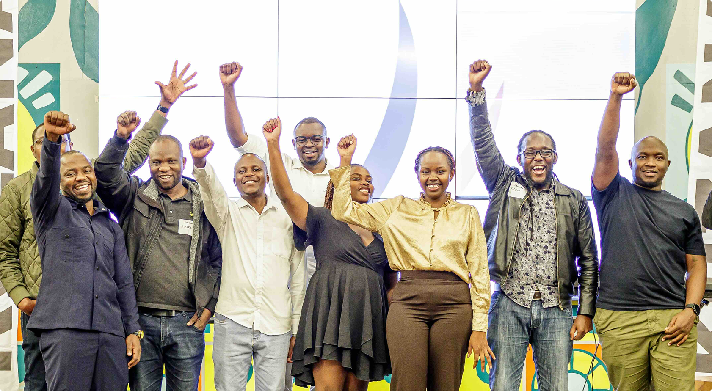
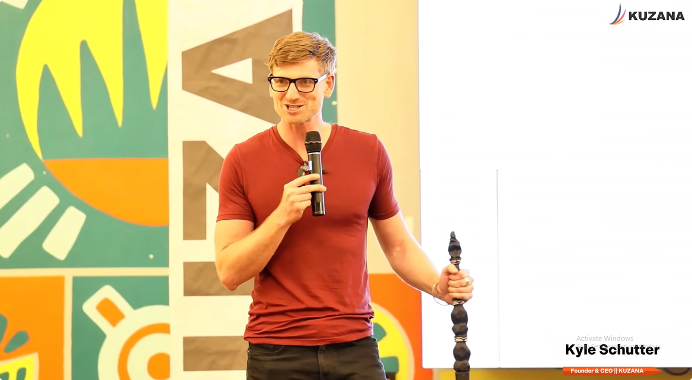
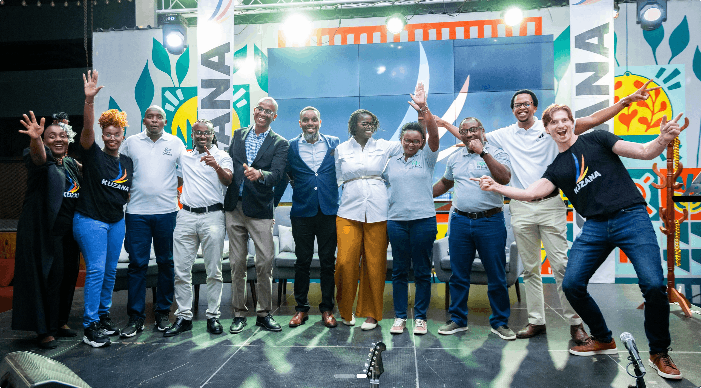

Kuzana is a Nairobi-based SME accelerator and investment program helping ambitious Kenyan founders build profitable, operationally strong businesses through capital, mentorship, and hands-on training.
Raised for companies across East Africa
Average revenue growth in 12 months
New millionaires in Africa, our goal by 2040
Kuzana’s 12 Friday program in Spring Valley, Nairobi, combines a $20K equity investment with practical business training, operational support, and a high-performance founder community. Most companies in our cohorts double their revenue during the program.
Focused sessions on finding customers who can actually pay, closing faster, and building repeat revenue, not one-off transactions.
KRA compliance to keep your business legally protected, plus operational systems that help your company run smoothly without depending on you for every problem.
Clean books, free accounting for 12 months, and a strategy board to hold you accountable, not just a cheque and a handshake.
You build alongside other founders. The conversations in between sessions are often more valuable than the sessions themselves.
Kuzana wasn't built in a boardroom.
It was built over 15 years of businesses started, money lost, lessons learned the hard way, and one growing conviction: the wrong things get all the attention in early-stage investing.
This is how it happened.
Kyle graduated with a degree in Biomedical Engineering from Brown University. The options were obvious: consulting or investing in New York. A predictable career, mapped out for the next decade.
He chose Africa instead. No plan. No idea what he'd be doing in ten days.
He traveled through Ghana, Uganda, Ethiopia, Rwanda, and Tanzania. Kenya passed what he calls the Blue Cheese Test.
It was the only country where you could buy blue cheese in a supermarket. That meant a middle class that could actually pay for things. Local entrepreneurship. Functioning cold chains. A simple heuristic, and a good one.
Kyle started a biogas company. Investors loved it. Renewable energy for rural farms, it sounded exactly right.Kyle started a biogas company. Investors loved it. Renewable energy for rural farms, it sounded exactly right.
He raised $1M. Patented a pay-as-you-go gas metering system. Worked at it for five hard years. It never made a profit.
Selling expensive systems to farmers with limited funds in one-off transactions is a fundamentally difficult business. Good intentions don't override economics.
He started a Thai restaurant in Nairobi. No outside funding.
It was profitable from the first month.
The lesson landed hard: he wasn't a bad entrepreneur. He'd just been pursuing a bad business opportunity. Buying from farmers and selling Thai food to Nairobians who could pay, in repeat transactions, is a completely different model.
Kyle went back to Silicon Valley to learn sales. Something no engineering degree teaches.
But something still wasn't right. He got on a motorcycle and rode south until he figured out what it was. Started businesses along the way. Three years later, he arrived in Peru.
After reconnecting with the founders in Kenya, Kyle started helping raise capital for East African companies.
It worked. Over time, he helped raise $20M for businesses across the region
The idea came together at Zanzalu, a pop-up city of builders and thinkers.
The conclusion was simple: stop focusing on funding. Start fixing the foundation.
Kuzana was built to turn 15 years of hard-earned business lessons into a structured program that helps founders build stronger, more profitable companies.
We apply proven principles from operators and investors, such as Warren Buffett on capital discipline, Montessori on learning by doing. What we've found after 15 years is consistent: founders who grow fast are strong in these three areas.
Great founders make each other stronger. You're the average of your five closest peers. Put ambitious people together, and they grow, like dying plants given water.
Strategy is a fancy word for saying no to most things. The cheetah that chases two gazelles catches none. What will you become the best at?
Without systems and compliance, every bit of growth just creates bigger problems. We help founders build the structure to handle scale.




The Kuzana team has started a biogas company, a Thai restaurant, an outsourced CFO agency, a microfinance institution, tech platforms, and a farming business. We have made mistakes. Now we help founders skip them.
CEO
co-Director
Executive Assistant
Only seven companies are selected per batch. Applications are reviewed quickly, with most investments completed within three months.
Apply to the Program